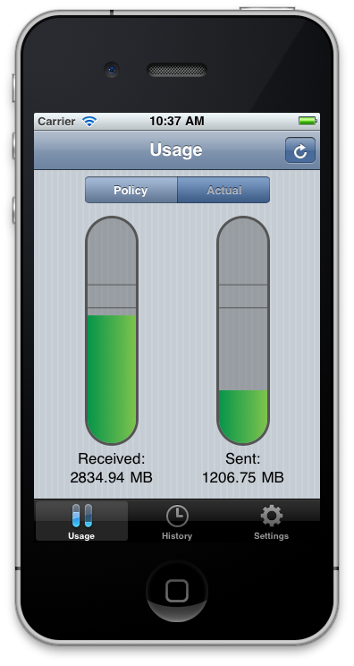

Don't go over bandwidth.
Ever.
Ever.

With IAIT's new sliding-window policies, it's harder than ever to know how much bandwidth you've consumed or whether your Internet access is being deliberately slowed down.
RoseBandwidth hooks into IAIT's system to tell you exactly what your bandwidth levels are, whenever you need to know. You'll never again need to wonder whether you're coming close to the bandwidth limits, or why your Internet access is so slow. With RoseBandwidth, you can check how close you are to going over the limits, and even see your past bandwidth use.
Take control of your Internet.
Get RoseBandwidth now.
RoseBandwidth hooks into IAIT's system to tell you exactly what your bandwidth levels are, whenever you need to know. You'll never again need to wonder whether you're coming close to the bandwidth limits, or why your Internet access is so slow. With RoseBandwidth, you can check how close you are to going over the limits, and even see your past bandwidth use.
Take control of your Internet.
Get RoseBandwidth now.